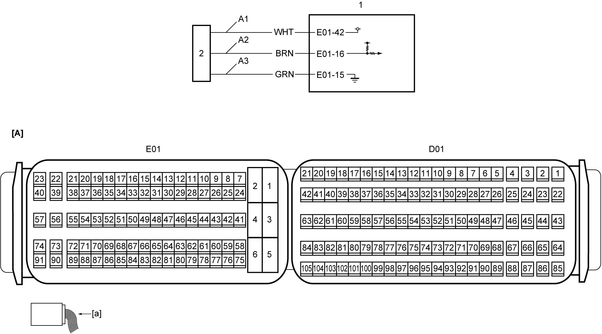

1A
| DPF® Differential Pressure Sensor Check |
Circuit Diagram

 "Expand image")
| [A]: | ECM connector (View: [a]) | A2: | DPF® differential pressure sensor signal circuit | 1. | ECM |
| A1: | DPF® differential pressure sensor power supply circuit | A3: | DPF® differential pressure sensor ground circuit | 2. | DPF® differential pressure sensor |
Troubleshooting
| Step | Action | Yes | No |
|---|---|---|---|
| 1 |
Parameter check
1)When ignition is “OFF”, connect SUZUKI scan tool to DLC.
2)Start engine and warm it up to normal operating temperature.
3)With engine at idle speed and accelerator pedal not depressed, check that “Differential Pressure” displayed on SUZUKI scan tool is 0.1 to 15 kPa (0.001 to 0.15 kgf/cm2, 0.0145 to 2.17 psi).
Is check result OK?
|
End.
|
Go to Step 2.
|
| 2 |
DPF® differential pressure sensor power supply circuit and ground circuit check
1)When ignition is “OFF”, disconnect DPF® differential pressure sensor connector.
2)Check for proper terminal connection to DPF® differential pressure sensor connector.
3)If connections are OK, set ignition “ON”.
4)Check that voltage between “A1” and “A3” circuits is approx. 5 V.
Is check result OK?
|
Go to Step 5.
|
Go to Step 3.
|
| 3 |
DPF® differential pressure sensor ground circuit check
1)Check that voltage between “A1” circuit and ground is approx. 5 V.
Is check result OK?
|
Repair “A3” circuit.
|
Go to Step 4.
|
| 4 |
DPF® differential pressure sensor power supply circuit check
1)When ignition is “OFF”, disconnect “E01” connector from ECM.
2)Check for proper terminal connection to “E01” connector.
3)If connections are OK, check the following points.
•Resistance of “A1” circuit: less than 1 Ω
•Resistance between “A1” circuit and ground: infinity •Resistance between “A1” circuit terminal and other terminal at DPF® differential pressure sensor connector: infinity •Voltage of “A1” circuit: approx. 0 V (When ignition is “ON”) Is check result OK?
|
Replace ECM and recheck parameter.
|
Repair or replace defective wire harness.
|
| 5 |
DPF® differential pressure sensor signal circuit check
1)When ignition is “OFF”, disconnect “E01” connector from ECM.
2)Check for proper terminal connection to “E01” connector.
3)If connections are OK, check the following points.
•Resistance of “A2” circuit: less than 1 Ω
•Resistance between “A2” circuit and ground: infinity •Resistance between “A2” circuit terminal and other terminal at DPF® differential pressure sensor connector: infinity •Voltage of “A2” circuit: approx. 0 V (When ignition is “ON”) Is check result OK?
|
Go to Step 6.
|
Repair or replace defective wire harness.
|
| 6 |
DPF® differential pressure sensor check
1)Check DPF® differential pressure sensor.
Is check result OK?
|
Replace ECM and recheck parameter.
|
Replace DPF® differential pressure sensor.
|